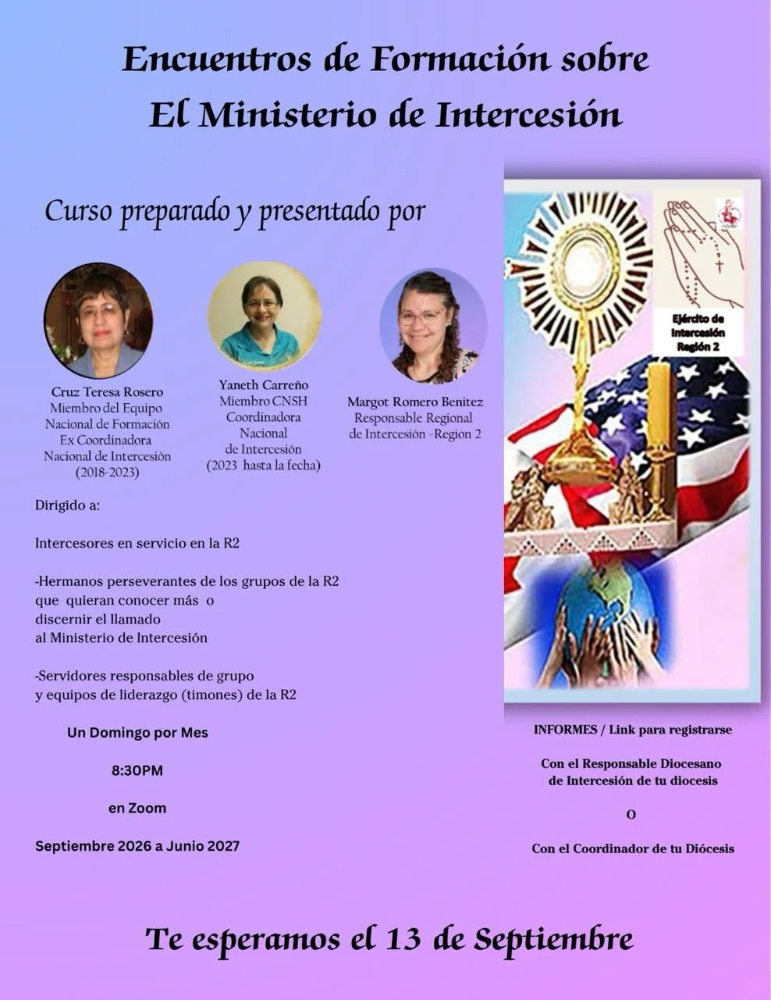

Intercesión
El corazón orante de la Renovación Carismática Católica de la Diócesis de Paterson.
El corazón orante de la Renovación Carismática Católica de la Diócesis de Paterson.
Si hoy cargas una enfermedad propia o de un ser querido, una situación familiar que no sabes cómo resolver, una decisión difícil, una pérdida, o simplemente sientes que ya no tienes fuerzas para seguir orando tú solo — este ministerio existe para ti. El Ministerio de Intercesión de la RCC Paterson recibe tu petición y la lleva delante de Dios con la misma fe y constancia con la que orarías por un hijo.
No necesitas explicar todo, ni pertenecer a ningún grupo, ni tener nada resuelto antes de pedirlo. Escríbenos tu petición — con el nombre que quieras compartir, o en total anonimato — y un equipo de intercesores orará por ti con total confidencialidad.
Pedir oración por WhatsAppUn espacio de formación mensual, por Zoom, para intercesores y servidores de toda la Región 2 — de septiembre 2026 a junio 2027. Si sientes que Dios te está llamando a la intercesión, este es el momento de responder.
Inscripciones abiertasCon el respaldo de Marizabel Pérez, Coordinadora Diocesana del Ministerio de Intercesión, quien invita a toda nuestra comunidad a vivir este espacio de formación regional.

¿Dudas? Consulta con el Responsable Diocesano de Intercesión o con el Coordinador de tu Diócesis.
Miembro del Equipo Nacional de Formación · Ex Coordinadora Nacional de Intercesión (2018–2023)
Miembro CNSH · Coordinadora Nacional de Intercesión (2023 – hasta la fecha)
Responsable Regional de Intercesión — Región 2
Esta invitación permanecerá publicada aquí hasta el primer encuentro del 13 de septiembre.
Su misión es sostener en oración a toda la comunidad diocesana, los eventos, los líderes y las familias, ejerciendo el sacerdocio bautismal común a todo cristiano.
Su fundamento doctrinal cita el Catecismo (CIC 2634-2636) sobre la intercesión como oración que nos conforma a la de Cristo, y a la RCC Hispana sobre las categorías de personas por quienes se debe interceder — autoridades, quienes sirven al Señor, enfermos y más (1 Tim 2:1-2, Stg 5:14-16). Fundamento bíblico adicional: Rm 8:26, Ef 6:18, Mt 5:44, Gn 18:16-33 (Abraham), Éx 32:30-32 (Moisés), Jn 2:3-5 (María en Caná).
Sus miembros oran antes, durante y después de cada actividad diocesana, reciben peticiones de la comunidad, sostienen a los servidores, interceden por enfermos y familias en crisis, y guardan vigilia en momentos especiales como Pentecostés Diocesano y los Seminarios de Vida en el Espíritu. Operan en equipos con horario de oración, registro de peticiones y confidencialidad absoluta — sin protagonismo ni visibilidad.
Si sientes que Dios te está llamando a servir como intercesor, este ministerio también te recibe con alegría — escríbenos para conocer cómo unirte a este servicio de oración constante.
“Una comunidad cristiana vive de la intercesión de sus miembros; de lo contrario, muere.”
— Dietrich Bonhoeffer, citado en la Guía Pastoral del Ministerio de Intercesión, RCC Paterson NJ